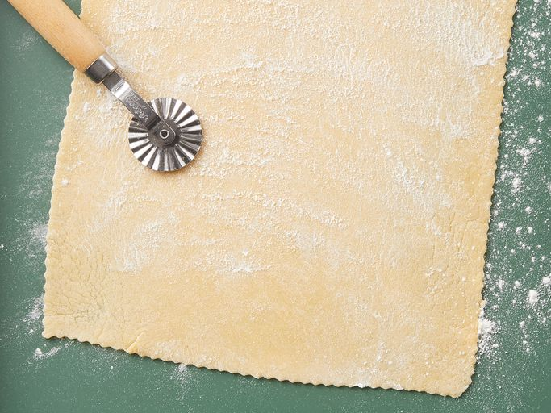

Homemade Lasagna Sheets

Description
Homemade lasagna noodles are easier to make than you think and you don't even need a pasta machine.
And forget about blanching the sheets before baking — no precooking is required!
Ingredients
- 21/4 cups Italian-style tipo 00 flour, plus additional for dusting
- 3 large eggs
- 1 pinch salt
- 1 tablespoon water as needed
Steps
- make a vulcano of flour and crack inside the eggs;add salt
- mix it; add water too stiff
- beat it and spank it until nice ball
- place in bowl and cover with plastic wrap; refrigerate for 30min-1hour
- use a rolling pin and make it flaaat
- give the final form with a knife and let air-dry for 30min befor assembling a lasagna
Home